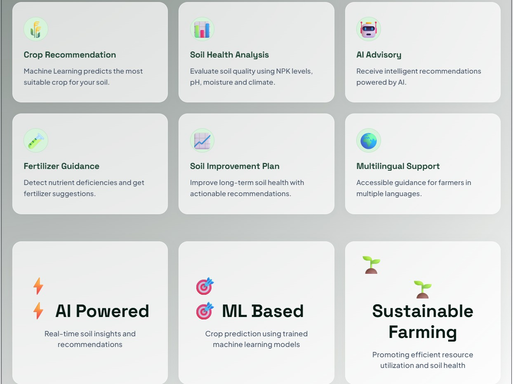

SELECTED WORK
Things I've Built
Projects that help me apply what I learn and keep improving.
EXPLORE MY WORK
Find a Project
Showing 2 projects
01 Soil Advisory System View project ＋


This project explores how soil information can support crop recommendations and help users make more informed decisions.
Technologies: Python, Machine Learning, web technologies
Video demo
Watch the project walkthrough below.
02 Student Portfolio Website View project ＋
A personal portfolio website introducing my background, education, skills, and projects.
Technologies: HTML, CSS
What I practiced: Multi-page navigation, responsive layouts, styling, and organizing content for the web.
No matching projects found. Try another search or filter.